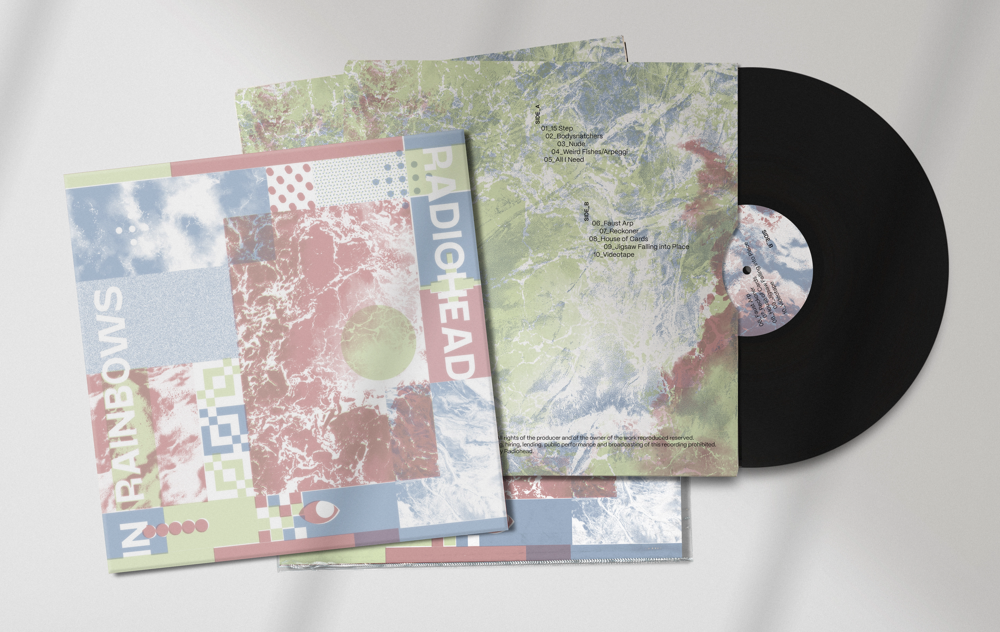

03-In Rainbows special edition
Año: 2024
Stanley Donwood trabajo en la portada de In Rainbows mientras Radiohead todavía estaba grabando el álbum. Esto le permitío transmitir el sonido a imagen. Y fue al ver la portada que Radiohead, inspirados, nombraron el álbum.
Esta reimaginación del portada pretende mantener la esencia del trabajo original de Donwood. Y ofrecer una nueva presentación para una edición especial para los fans.